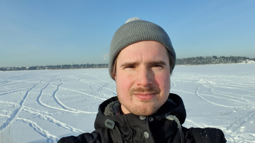

Next: Education Up: A glimpse to my Previous: Contents Contents
I am a Finnish mathematician interested in engineering. Read about my life, or jump straight to my professional records in the subsections below. Also, check out my blog.
|  |
I am keeping up a monthly blog that you can find in the blog posts section. It handles stuff encountered in my daily professional life (and I keep the right to write about other subjects). I hope you will find it interesting.
Btw, In the free time I love music, literature, long walks listening to podcasts, coffee and beer.